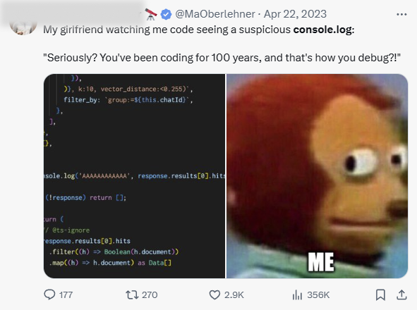
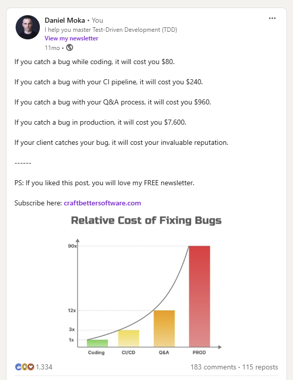
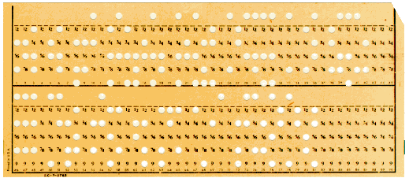
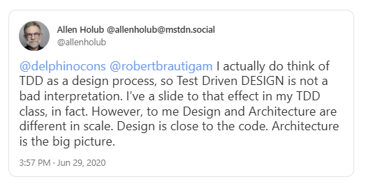
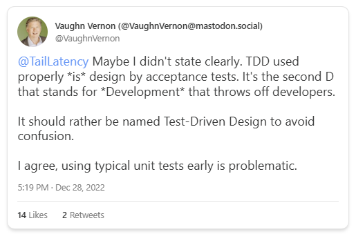
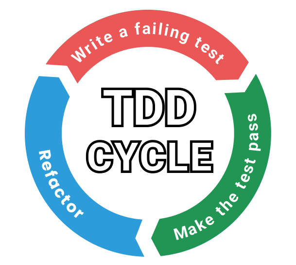
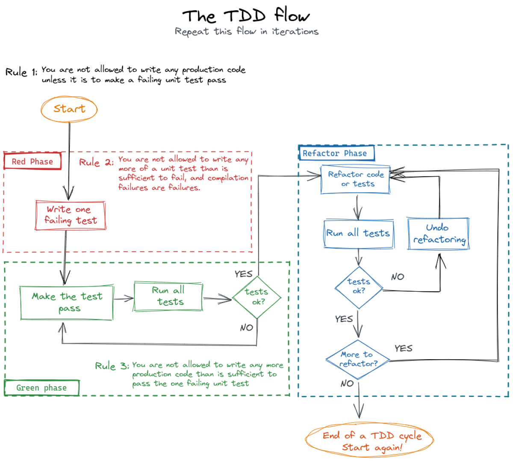

class: center, middle # Modern Software Development with TDD <!-- Inspiration: https://sizovs.net/jninja/#1--> <!-- Inspiration: https://github.com/gnab/remark--> --- # Day 1 Schedule | Time | Event | |---------------|--------------------------------------------| | 9:00 - 10:20 | - TDD Intro + Domain TDD | | 10:30 - 12:00 | - Killing features + Zombies TDD | | 13:00 - 14:20 | - Clean testing practices | | 14:30 - 15:50 | - London/Chicago schools of TDD | | 16:00 - 17:30 | - Mutation Testing + Exercise | --- # Day 2 Schedule | Time | Event | |---------------|--------------------------------------------| | 9:00 - 10:20 | - Pragmatic Architecture | | 10:30 - 12:00 | - Building .NET API with TDD | | 13:00 - 14:20 | - Integration testing + cross-cutting | | 14:30 - 15:50 | - Testing legacy code | | 16:00 - 17:30 | - Refactoring legacy | --- ## About me - Software Craftsman 🇭🇺 - 10+ years experience in testing and TDD - 100,000+ followers - My mission - Love doing sports <div style="text-align: center;"> </div> --- class: center, middle # Why we do TDD? --- ## Problem #1 - Long feedback loops - Code as a text - Lag between changing the code and executing it - Source of many problems --- ## Problem #2 - Risky changes - Fear of refactoring - Low confidence in test suite - High chance of introducing bugs --- ## Problem #3 - Extensive use of debugger <div style="text-align: center;"> <img src="./assets/debugging1.png" alt="Example Image" style="width:400px;"> </div> --- ## Problem #3 - Extensive use of debugger <div style="text-align: center;">  </div> --- ## Problem #3 - Extensive use of debugger - Developers spend 25-50% of the time debugging - Unproductive activity - Ironic and self-deprecating humor --- ## Problem #4 - Bugs <div style="text-align: center;">  </div> --- ## Problem #4 - Bugs - Bugs are expensive and oftentime disastrous - Costs our reputation - We can't fulfill our most important task --- ## Problem # 5 - We will refactor it later Famous last words <div style="text-align: center;"> </div> --- ## Problem # 5 - Refactoring later - Never happens - Hard justify - hard to sell - There are always important stuff to do - Leads to maintainable code (big ball of mud & spaghetti code) --- class: center, middle # Why we do TDD? --- ## TDD solves all the discussed problems - Reduce feedback loops - running our test all the time - No risky changes - TDD leads to fully tested - Minimized debugging - we run test all the time - Bugs are prevented - strong test suite and fully tested code - Refactoring is done inn every cycle - Leads to clean code ??? So we refactor during development --- class: center, middle ## And this is just the beginnig... ??? TDD helps has a lot of additional killing features that helps you to write code in easy, safe and fast way. --- class: center, middle # What is TDD? --- # History of TDD Punch card with a failing test <div style="text-align: center;">  </div> Rediscovery from Kent Beck <div style="text-align: center;"> </div> ??? Punch: The history of Test-Driven Development goes way back to 1950. Back then, programmers have done programming by preparing punch cards containing holes in them. A punch card is created either manually or by machines, where the holes represented data with its instructions. They were the input for the computer machines. Once the cards are created, they got fed into computers, then computers read the values and transformed them into digital information. The rules of the transformation were defined in machine code. As an output of the transformation, the computer produced a new punch card with holes that represented the results of the operations defined by the original input punch card. However, the programmers faced a challenge when they needed to confirm whether the results met their expectations. How could they quickly verify that their initially prepared punch cards contained the right holes to produce the expected output? Doing it manually was a time-consuming and cumbersome process, so they needed a better way. But luckily programming pioneers came up with a brilliant solution. For every input punch card, they also created an expected output card. They had namely a failing test which is the most famous phenomenon in TDD. Once the machine returned the actual result card, then they took and overlayed it with the expected output card. If both cards had the exact same holes, they have done a good job of punching holes in the input card. If the results did not match their expectations, they had to modify their program until it passed their tests of comparing punch cards. They had a failing test then they made it pass. That’s how TDD was born. Since then the IT industry has rapidly improved in terms of developer experience. We ditched the physical tapes and started communicating with machines by using text-based languages. Assembly, Fortran, COBOL, Basic, Pascal, C, C++, and all the way up to high-level abstract languages like Javascript, C#, Rust, and many more. We even reached the point that nowadays one doesn’t really need prior programming knowledge to create software. We just have to think about all the no-code tools in the market, such as WordPress. Although such no-code tools provide incredible results in a short amount of time, they're far from perfect, and once we need custom and more sophisticated solutions, we can go better with high-level programming languages. But to go fast with high-level programming languages, we need to write software well. Kent: Kent Beck has always been known for his humbleness. Being humble is one of the most valuable traits of a human being, there is nothing wrong with it. But the credit should go where it belongs to. What Kent did was not only a rediscovery of Test-Driven Development but also a historic invention of a quick-feedback-loop-based way of working with Object-Oriented Programming languages. His book “Test Driven Development: By Example” has become the bible for all extreme programming enthusiasts. He defined the exact rules and steps to write software in short cycles, with continuous improvements, and executed in baby steps. He literally invented the best software development approach for writing software in a fast, elegant, and safe way. He is literally the GOAT of our industry, admired and respected by all the software crafters in the world. He brought his attitudes, ideas, and practices to the mass, inspiring, mentoring, and creating high-class software professionals. His technological footprint is unprecedented, resulting in an environment where striving for technical excellence became the motto for everyone who cares about quality. --- class: center, middle # Design, development or testing tool? ??? There is a lot debate --- ## What is TDD? <div style="text-align: center;">  </div> --- ## What is TDD? <div style="text-align: center;">  </div> --- # What is TDD? It is a blend of three: design, development and testing Development - The TDD cycle and three laws of TDD Design - Tests are the first user the code (TODO: talk about these in the silver bullet in more detail, using the book) Testing tool - We produce code by writing automated test --- ## TDD CYCLE 3 phases: - <span class="red-bg"> Red:</span> write a failing test - <span class="green-bg"> Green:</span> make the test past - <span class="blue-bg">Refactoring:</span> refactor both prod and test code Cycle time: ~1min <div style="text-align: center;">  </div> ??? But this is not enough. What is a good failing test? What is an enough test? What enforces us to take baby steps? --- class: center, middle #The three laws of TDD --- class: center, middle # Law #1 ## You are not allowed to write any production code unless it is to make a failing unit test pass ##In other words: <span class="green-bg">Start with a failing test</span> --- class: center, middle # Law #2 ## You are not allowed to write any more of a unit test than is sufficient to fail, and compilation failures are failures ## In other words: <span class="green-bg">Stop writing your test as soon as it fails or doesn't compile</span> --- class: center, middle # Law #3 ##You are not allowed to write any more production code than is sufficient to pass the one failing unit test ## In other words: <span class="green-bg">Stop writing production code as soon as the test passes</span> --- # The TDD flow <div style="text-align: center;">  </div> --- # The nature of TDD ## Iterative - by repeating the TDD cycle ## Incremental - gradually build up the features --- # The nature of TDD <div style="text-align: center;"> <img src="./assets/tdd-nature.jpg" alt="Example Image" style="width:550px;"> </div> # FizzBuzz TODO: prepare the base --- class: middle, center # Show time! ---